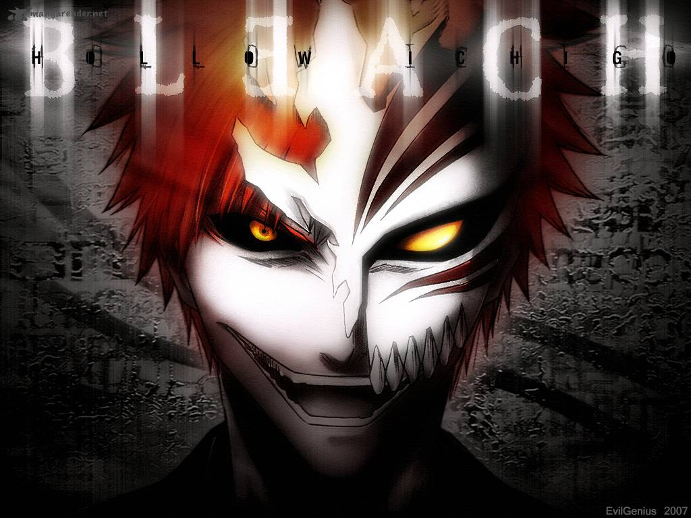

เนื้อเรื่อง One piece วันพีช
ในเรื่องพูดถึงยุคทองของโจรสลัด เมื่อเจ้าแห่งโจรสลัด โกลด์ ดี โรเจอร์ ถูกประหาร มหาสมบัติวันพีซในตำนานก็ไร้เจ้าของ ทำให้โจรสลัดทั่วโลกต่างพากันกางธงเข้าแย่งชิงมหาสมบัตินี้
มังกี้ ดี ลูฟี่ ผู้ซึ่งวัยเด็กได้มีโอกาสรู้จักกับหนึ่งในโจรสลัดผู้ยิ่งใหญ่ แชงคูส "ผมแดง" มีความใฝ่ฝันที่จะก้าวข้ามแชงคูสไปเป็นเจ้าแห่งโจรสลัด ลูฟี่ได้กินผลปีศาจ
เข้าไปทำให้ร่างกายมีลักษณะพิเศษคือมีคุณสมบัติเป็นยาง ซึ่งลูฟี่ได้อาศัยพลังของผลปีศาจนี้ฝึกฝนวิชาการต่อสู้กับสัตว์ร้ายในทะเล
เมื่อโตลูฟี่ได้ออกเดินทางตามลำพัง โดยหาทางผจญภัยไปยังแกรนด์ไลน์ สถานที่ที่เชื่อว่ามีวันพีซซ่อนอยู่
เนื้อเรื่อง Toriko นักล่าอาหาร
เรื่องราวเกิดขึ้นในยุคแห่งกรูเมต์ หรือยุคแห่งการแสวงหารสชาติที่เหล่านักล่าอาหารต่างออกตามล่าวัตถุดิบแปลกใหม่ที่ไม่เคยมีใครได้ลิ้มรสมาก่อน
โทริโกะ เองก็เป็นนักล่าอาหารอัจฉริยะ และมากด้วยความสามารถ เขาออกตามล่าหาวัตถุดิบแปลกใหม่เพื่อทำให้เมนู “ฟลูคอร์ส” ของเขาสมบูรณ์แบบ
ซึ่งแน่นอนว่า วัตถุดิบที่เขาหามาได้นั้น ล้วนแต่ไม่ธรรมดาทั้งสิ้นแต่ก็ยึดถือคติว่า ” ไม่ฆ่าสิ่งที่ ตัวเองไม่อยากกิน
“การเดินทางไปในสถานที่ต่างๆเพื่อตามล่าหาวัตถุดิบจึงเริ่มต้นขึ้น…
เนื้อเรื่อง Naruto นินจาจอมคาถา
อุซึมากิ นารุโตะ เด็กชายเจ้าปัญาหาแห่งหมู่บ้านโคโนะฮะ เมื่อ 12 ปีก่อน โฮคาเงะรุ่นที่ 4 ได้ผนึกร่างของจิ้งจอกเก้าหาง
ที่อาวะวาดทำลายหมู่บ้านไว้ในร่างของนารุโตะที่ยังเป็นทารกแรกเกิด นารุโตะจึงเติบโตมาโดยเป็นที่หวาดเกรงและรังเกียจจากคนในหมู่บ้าน
ถึงจะหัวช้า มุทะลุ โดนดูถูกมากมาย แต่นารุโตะก็มีความใฝ่ฝันว่าจะเป็นโฮคาเงะให้ได้

เนื้อเรื่อง Bleach เทพมรณะ
คุโรซากิ อิจิโกะ เด็กหนุ่มที่สามารถมองเห็นวิญญาณได้ วันหนึ่งเขาได้พบกับ คุจิกิ ลูเคีย ยมทูตสาวที่กำลังไล่ล่าฮอลโล่
วิญญาณปีศาจร้ายอยู่ ต่อมาลูเคียเสียทีต่อฮอลโล่ จึงต้องถ่ายพลังทั้งหมดให้กับอิจิโกะ อิจิโกะจึงต้องรับหน้าที่เป็นยมทูตนับแต่นั้น
ส่วนลูเคียที่สูญเสียพลังนั้น ก็ต้องอยู่ในร่างของมนุษย์ปกติไปก่อน จนกว่าพลังจะฟื้นขึ้นมา วันหนึ่ง โซลโซไซตี้ สถานที่พำนักของเหล่ายมทูต
ได้ส่ง อาบาราอิ เร็นจิ และ คุจิกิ เบียคุยะ จับตัวลูเคียกลับไปโซลโซไซตี้รอการตัดสินโทษ ทำให้อิจิโกะ
และ ผองเพื่อนผู้มีพลังพิเศษซึ่งได้แก่ อิชิดะ อุริว,แช้ด หรือ ซาโดะ ยาสึโทระ,อิโนะอุเอะ โอริฮิเมะ ตัดสินใจไปช่วยเหลือลูเคีย
ณ โซลโซไซตี้